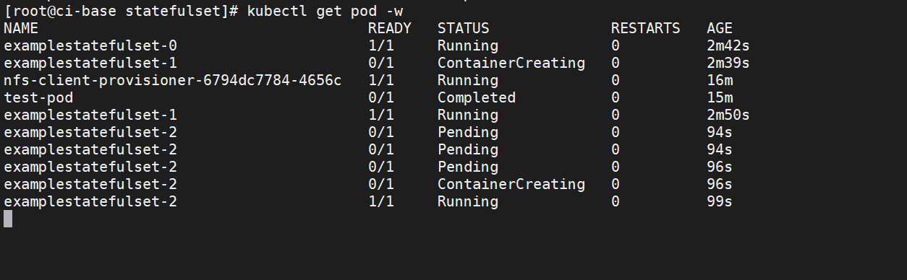

Contents
StatefulSet控制器¶
StatefulSet控制器是一种提供排序和唯一性保证的特殊Pod控制器。当有与部署顺序、持久数据或固定网络等相关的特殊需求时，可 以使用StatefulSet控制器来进行更细粒度的控制。
StatefulSet控制器通常与面向数据的应用程序（如数据库）关联，它即使被重新分配到一个新的节点上，还是需要访问同一个存储卷的。
StatefulSet控制器对应于有状态服务（Deployment控制器对应于无状态服务），前者的功能如下所示。
实现稳定的持久化存储：Pod重新调度后还能访问相同的持久化数据，可基于PVC来实现。
实现稳定的网络标识：Pod重新调度后其PodName和HostName不变，基于无头Service（没有Cluster IP的Service）来实现。
实现有序部署、有序伸缩：Pod是有顺序的，在部署或者扩展的时候要依据定义的顺序依次执行（即从第一个到最后一个依次部 署，在下一个Pod运行之前所有的Pod必须都处于Running或Ready状态）。
实现有序收缩、有序删除：从最后一个开始，依次删除到第一个。
创建StatefulSet资源之前，先要保证集群中存在StorageClass，并使用headless service暴露服务 StatefulSet相较于Deployment，多了volumeClaimTemplates字段，即pvc存储的配置信息
yaml模板
apiVersion: apps/v1 #必填，版本号
kind: StatefulSet #必填，资源类型
metadata: #必填，元数据
name: <name>-sts #必填，资源名称
namespace: <namespace> #Pod所属的命名空间
spec: #必填，部署的详细定义
selector: #必填，标签选择
matchLabels: #必填，标签匹配
key: <value> #必填，通过此标签匹配对应pod<key: value>
serviceName: string # Headless Service资源名称
replicas: int # 副本数量
template: #必填，应用容器模版定义
metadata: #必填，元数据
labels: # 标签
key: <value> #必填，与上面matchLabels的标签相同
spec:
containers: #此处参考pod的containers
volumeClaimTemplates: #必填，+pvc模板
- metadata: #必填，元数据
name: <name>-depolyment #必填，资源名称
spec:
accessModes: [ "ReadWriteOnce | ReadOnlyMany | ReadWriteMany" ] #必填，访问模式
storageClassName: strint #存储类名，改为集群中已存在的
resources: # 存储卷需要占用的资源量最小值
requests: # 请求空间大小
storage: 1Gi # 空间大小值
yaml示例：以nginx服务使用nfs共享存储为例
#先定义了一个名为myapp-svc的Headless Service资源，用于为关联到的每个Pod资源创建DNS资源记录。
apiVersion: v1
kind: Service
metadata:
name: myapp-svc
labels:
app: myapp-svc
spec:
ports:
- port: 80
name: web
clusterIP: None
selector:
app: myapp-pod
---
# 定义多个使用NFS存储后端的PV，空间大小为2GB，仅支持单路的读写操作。
apiVersion: v1
kind: PersistentVolume
metadata:
name: nfs-pv
spec:
capacity:
storage: 2Gi
accessModes:
- ReadWriteOnce
persistentVolumeReclaimPolicy: Recycle
storageClassName: nfs
nfs:
path: /nfs/data1
server: 172.17.0.2
---
# 定义了一个名为myapp的StatefulSet资源，它通过Pod模板创建了两个Pod资源副本，并基于volumeClaimTemplates（存储卷申请模板）向nfs存储类请求动态供给PV，从而为每个Pod资源提供大小为1GB的专用存储卷。
apiVersion: apps/v1
kind: StatefulSet
metadata:
name: myapp-sts
spec:
selector:
matchLabels:
app: myapp-pod
serviceName: myapp-svc
replicas: 2
template:
metadata:
labels:
app: myapp-pod
spec:
containers:
- name: nginx
image: k8s.gcr.io/nginx-slim:0.8
ports:
- containerPort: 80
name: web
volumeMounts:
- name: myapp-data
mountPath: /usr/share/nginx/html
volumeClaimTemplates:
- metadata:
name: myapp-data
spec:
accessModes: [ "ReadWriteOnce" ]
storageClassName: "nfs"
resources:
requests:
storage: 1Gi
1.statefulset的组成¶
StatefulSet控制器由3个部分组成
无头Service：用于为Pod资源标识符生成可解析的DNS记录。
volumeClaimTemplates：基于静态或动态PV供给方式为Pod资源提供专有的固定存储。
StatefulSet：管理Pod资源。
StatefulSet控制器的组成
2.为什么要用StatefulSet控制器？¶
Deployment控制器下的每一个Pod都毫无区别地提供服务。
但StatefulSet控制器下的Pod则不同，虽然各个Pod的定义是一样的，但因为数据不同，所提供的服务是有差异的。
分布式存储系统就适合使用StatefulSet控制器，由Pod A存储一部分数据并提供相关服务，由Pod B存储另一部分数据并提供相关服务。
又比如有些服务会临时保存客户请求的数据，如使用服务端Session方式存放部分信息的业务网站，由于Session的不同，Pod A和Pod B能提供的服务也不尽相同，这种场景也适合使用StatefulSet控制器。
因为在上述场景下每一个有状态的Pod提供的服务都不一样，所以每一个Pod不能被随意取代，必须有序分配且必须为其分配唯一的标识。
Pod名称将是它们的唯一标识符，和Deployment控制器下的Pod不同，即使有状态的Pod发生故障并被重建，Pod名称也会和原来的一模一样。
因为各个有状态的Pod也必须要拥有一个唯一的网络标识符以访问具体的某个Pod，所以会用到无头Service，无头Service可以给每个 Pod分配一个唯一的DNS名称。
有状态的Pod都会使用到持久存储（如果没有持久存储，Pod发生故障时数据就没有了）。
如前所述，有状态的Pod的最大特点是各个Pod中的数据是不一样的，所以各个Pod无法共用同一个存储卷。
需要单独分配各自的PV和PVC
因为每个Pod要有各自专用的存储卷，所以并不是在Pod模板中定义（若在Pod模板中定义，那么每个Pod都用的同一个存储卷）StatefulSet控制器的存储卷配置，而是在StatefulSet控制器模板的volumeClaimTemplate属性中定义存储卷的申请模板，并会为每个 Pod生成不同的PVC且各自绑定PV，从而使各个Pod拥有各自专用的存储卷。
因为每个Pod都会产生各自专用的PVC及PV，所以StatefulSet控制器的存储最好通过StorageClass来动态创建。
当然，也可以通过手动创建各个预设的PV，只是这个过程会相当麻烦。
3.StatefulSet控制器的基本操作¶
定义模板文件，创建一个名为examplestatefulset.yml的模板文件
kind: Service
apiVersion: v1
metadata:
name: examplestatefulservice
spec:
selector:
example: exampleforstateful
# headless service
clusterIP: None
ports:
- protocol: TCP
port: 8080
targetPort: 80
type: ClusterIP
---
apiVersion: apps/v1
kind: StatefulSet
metadata:
name: examplestatefulset
spec:
replicas: 3
serviceName: "examplestatefulservice"
selector:
matchLabels:
example: exampleforstateful
template:
metadata:
labels:
example: exampleforstateful
spec:
containers:
- name: pythonserviceforstateful
image: python:3.7
imagePullPolicy: IfNotPresent
command: ['sh', '-c']
args: ['echo "The host is $(hostname)" >> /dir/data; echo "<p>The host is $(hostname)</p>" > index.html; python -m http.server 80']
volumeMounts:
- name: statefuldata
mountPath: /dir
ports:
- name: http
containerPort: 80
volumeClaimTemplates:
- metadata:
name: statefuldata
spec:
accessModes: [ "ReadWriteOnce" ]
storageClassName: "managed-nfs-storage"
resources:
requests:
storage: 200Mi
这个模板主要分为3个部分。首先，创建了一个无头Service，其名称为examplestatefulservice。它会通过标签选择器关联到各个标签为
example: exampleforstateful的Pod上。
然后，创建了一个StatefulSet模板。该StatefulSet模板的前半部分的定义和Deployment模板相似，定义了3个Pod副本，其容器为 “python:3.7”镜像，其目的是搭建服务。在启动容器时，会先以追加方式向/dir/data文件写入一串文本”The host is \((hostname)"， 这串文本使用\)(hostname)环境变量获取当前Pod名称。/dir目录通过volumeMounts属性映射到名为statefuldata的存储卷申请模板 上，这在写入文本时会直接写入存储卷中。
接下来，执行echo "<p>The host is $(hostname)</p> "index.html命令，将一段HTML代码插入index.html文件中，这样
在访问index.html时就可以知道访问的是哪个Pod。
另外，通过python -m http.server 80命令，搭建一个简单的Web服务，并令服务对应的端口为80。
StatefulSet模板的后半部分是存储卷申请模板，其定义的内容和PVC模板的差不多，但要注意，这里批量定义了PVC。 storageClassName属性设置为managed-nfs-storage，与上一节中创建的StorageClass名称保持一致。
requests为storage:200Mi，这表示为每一个Pod都申请200MiB的存储空间。
接下来，执行以下命令，创建StatefulSet控制器的相关资源。
$ kubectl apply -f examplestatefulset.yml
在创建过程中，在不同时段通过$ kubectl get pod进行查看，会发现Pod是按照顺序依次创建的。
Kubernetes会先创建第一个Pod，第二个Pod处于Pending状态。
第一个Pod创建完毕后创建第二个Pod，此时第三个Pod处于Pending状态。
前两个Pod创建完毕后，再创建第三个Pod。Pod的名称和Deployment控制器下的Pod不一样，名称末尾并没有生成随机字符串，而是按照数字顺序从0开始依次向上累加。
StatefulSet控制器下有序创建的各个Pod
通过以下命令，可以查看StatefulSet控制器的总体状态。
$ kubectl get statefulset
NAME READY AGE
examplestatefulset 3/3 82s
通过以下命令，可以查看StatefulSet控制器的详细信息。
$ kubectl describe statefulset examplestatefulset
Name: examplestatefulset
Namespace: default
CreationTimestamp: Mon, 18 Apr 2022 14:59:01 +0800
Selector: example=exampleforstateful
Labels: <none>
Annotations: <none>
Replicas: 3 desired | 3 total
Update Strategy: RollingUpdate
Partition: 0
Pods Status: 3 Running / 0 Waiting / 0 Succeeded / 0 Failed
Pod Template:
Labels: example=exampleforstateful
Containers:
pythonserviceforstateful:
Image: python:3.7
Port: 80/TCP
Host Port: 0/TCP
Command:
sh
-c
Args:
echo "The host is $(hostname)" >> /dir/data; echo "<p>The host is $(hostname)</p>" > index.html; python -m http.server 80
Environment: <none>
Mounts:
/dir from statefuldata (rw)
Volumes: <none>
Volume Claims:
Name: statefuldata
StorageClass: managed-nfs-storage
Labels: <none>
Annotations: <none>
Capacity: 200Mi
Access Modes: [ReadWriteOnce]
Events:
Type Reason Age From Message
---- ------ ---- ---- -------
Normal SuccessfulCreate 5m6s statefulset-controller create Claim statefuldata-examplestatefulset-0 Pod examplestatefulset-0 in StatefulSet e xamplestatefulset success
Normal SuccessfulCreate 5m6s statefulset-controller create Pod examplestatefulset-0 in StatefulSet examplestatefulset successful
Normal SuccessfulCreate 5m3s statefulset-controller create Claim statefuldata-examplestatefulset-1 Pod examplestatefulset-1 in StatefulSet e xamplestatefulset success
Normal SuccessfulCreate 5m3s statefulset-controller create Pod examplestatefulset-1 in StatefulSet examplestatefulset successful
Normal SuccessfulCreate 3m47s statefulset-controller create Claim statefuldata-examplestatefulset-2 Pod examplestatefulset-2 in StatefulSet e xamplestatefulset success
Normal SuccessfulCreate 3m47s statefulset-controller create Pod examplestatefulset-2 in StatefulSet examplestatefulset successful
4.PVC及PV的使用¶
我们先检查存储卷的使用情况。此时如果通过$ kubectl getpvc以及$ kubectl get pv命令进行查询，可以看到StatefulSet
控制器为每个Pod都创建了各自专用的PVC及PV。
$ kubectl get pv|grep default/statefuldata-examplestatefulset
pvc-0bd1af19-8af1-41b1-ba61-8933ac9fb8f2 200Mi RWO Delete Bound default/statefuldata-examplestatefulset-2 managed-nfs-storage 6m46s
pvc-3144e3df-cf7c-46c6-a285-d2719b9d5161 200Mi RWO Delete Bound default/statefuldata-examplestatefulset-1 managed-nfs-storage 8m2s
pvc-9fa9ae39-a778-4d31-aa38-37c84de9d7fa 200Mi RWO Delete Bound default/statefuldata-examplestatefulset-0 managed-nfs-storage 8m4s
$ kubectl get pvc
NAME STATUS VOLUME CAPACITY ACCESS MODES STORAGECLASS AGE
statefuldata-examplestatefulset-0 Bound pvc-9fa9ae39-a778-4d31-aa38-37c84de9d7fa 200Mi RWO managed-nfs-storage 7m41s
statefuldata-examplestatefulset-1 Bound pvc-3144e3df-cf7c-46c6-a285-d2719b9d5161 200Mi RWO managed-nfs-storage 7m38s
statefuldata-examplestatefulset-2 Bound pvc-0bd1af19-8af1-41b1-ba61-8933ac9fb8f2 200Mi RWO managed-nfs-storage 6m22s
任意挑选一个PV，通过$ kubectl describe pv命令查看详情，可以看到它在NFS服务器共享目录上创建的专用目录，
$ kubectl describe pv pvc-0bd1af19-8af1-41b1-ba61-8933ac9fb8f2
Name: pvc-0bd1af19-8af1-41b1-ba61-8933ac9fb8f2
Labels: <none>
Annotations: pv.kubernetes.io/provisioned-by: fuseim.pri/ifs
Finalizers: [kubernetes.io/pv-protection]
StorageClass: managed-nfs-storage
Status: Bound
Claim: default/statefuldata-examplestatefulset-2
Reclaim Policy: Delete
Access Modes: RWO
VolumeMode: Filesystem
Capacity: 200Mi
Node Affinity: <none>
Message:
Source:
Type: NFS (an NFS mount that lasts the lifetime of a pod)
Server: 192.168.1.60
Path: /nfstest/default-statefuldata-examplestatefulset-2-pvc-0bd1af19-8af1-41b1-ba61-8933ac9fb8f2
ReadOnly: false
Events: <none>
在NFS服务器上执行以下命令，查看Pod是否已成功向该目录写入文件。
执行结果如下所示，可以看到Pod已成功向它的专属存储卷中写入数据。
$ cat /data/nfs/nfstest/default-statefuldata-examplestatefulset-0-pvc-9fa9ae39-a778-4d31-aa38-37c84de9d7fa/data
The host is examplestatefulset-0
对于其余两个Pod也是一样的，先通过$ kubectl describe pv pvName命令查看其专属目录位置，然后执行命令查看文件是否写入。
$ kubectl describe pv pvc-3144e3df-cf7c-46c6-a285-d2719b9d5161
Name: pvc-3144e3df-cf7c-46c6-a285-d2719b9d5161
Labels: <none>
Annotations: pv.kubernetes.io/provisioned-by: fuseim.pri/ifs
Finalizers: [kubernetes.io/pv-protection]
StorageClass: managed-nfs-storage
Status: Bound
Claim: default/statefuldata-examplestatefulset-1
Reclaim Policy: Delete
Access Modes: RWO
VolumeMode: Filesystem
Capacity: 200Mi
Node Affinity: <none>
Message:
Source:
Type: NFS (an NFS mount that lasts the lifetime of a pod)
Server: 192.168.1.60
Path: /nfstest/default-statefuldata-examplestatefulset-1-pvc-3144e3df-cf7c-46c6-a285-d2719b9d5161
ReadOnly: false
Events: <none>
$ cat /data/nfs/nfstest/default-statefuldata-examplestatefulset-1-pvc-3144e3df-cf7c-46c6-a285-d2719b9d5161/data
The host is examplestatefulset-1
结果：每个Pod都往各自的存储卷中写入了数据。
5.无头Service的访问¶
我们检查Service的发布情况。使用$ kubectl get svc命令可以看到已经创建了一个无头Service。
$ kubectl get svc
NAME TYPE CLUSTER-IP EXTERNAL-IP PORT(S) AGE
examplestatefulservice ClusterIP None <none> 8080/TCP 11m
kubernetes ClusterIP 10.96.0.1 <none> 443/TCP 173d
由于这个Service无法由集群内外的机器直接访问，因此只能由Pod访问，而且需要通过DNS形式来访问，具体访问形式为
{ServiceName}.{Namespace}.svc.{ClusterDomain}。
svc是Service的缩写（固定格式）；
ClusterDomain表示集群域，本例中默认的集群域为cluster.local；
前面两个字段则是根据Service定义决定的，在这个例子中ServiceName为examplestatefulservice，而Namespace我们没有在yml文件中指定，默认值为Default。
在访问这个地址之前，我们先创建一个测试用的Pod，用它来尝试访问Service。命令如下。
examplepodforheadlessservice.yml
apiVersion: v1
kind: Pod
metadata:
name: examplepodforheadlessservice
spec:
containers:
- name: testcontainer
image: docker.io/appropriate/curl
imagePullPolicy: IfNotPresent
command: ['sh', '-c']
args: ['echo "test pod for headless service!"; sleep 3600']
这个Pod并没有什么特别之处，其镜像为appropriate/curl。该镜像是一种工具箱，里面存放了一些测试网络和DNS使用的工具（例 如curl和nslookup等），可用于测试现在的Service。通过sleep3600命令，可让该容器长期处于运行状态。
通过模板创建Pod。
$ kubectl apply -f examplepodforheadlessservice.yml
Pod创建完成后，就可以通过以下命令进入Pod内部，这样就可以在Pod内部执行命令行。
进入容器内部后，可以执行nslookup命令查询DNS信息，获得这个DNS下面的IP地址列表。之前已经提到，Kubernetes中的DNS资源访 问方式为{ServiceName}.{Namespace}. svc.{ClusterDomain}，本例中的具体命令如下。
$ kubectl exec -it pod/examplepodforheadlessservice -- /bin/sh
/ # nslookup examplestatefulservice.default.svc.cluster.local
nslookup: can't resolve '(null)': Name does not resolve
Name: examplestatefulservice.default.svc.cluster.local
Address 1: 10.0.16.28 examplestatefulset-1.examplestatefulservice.default.svc.cluster.local
Address 2: 10.0.32.106 examplestatefulset-2.examplestatefulservice.default.svc.cluster.local
Address 3: 10.0.36.231 examplestatefulset-0.examplestatefulservice.default.svc.cluster.local
可以看到，一共返回了3个IP地址，这些IP地址正是之前创建的各个Pod的IP地址，而Kubernetes又为每个 Pod地址创建了对应的专属域名。访问这些专属域名就可以访问指定Pod提供的服务
当然，也可以直接使用无头Service的总域名来访问服务，如下面所示。通过这种方式访问的服务是随机的，这对于Deployment控制 器提供的无状态Pod没有问题，但如前所述，对于StatefulSet控制器提供的有状态Pod而言，每个Pod提供的服务都是不同的，在调用时必须指明调用哪一个Pod提供的服务。
/ # curl examplestatefulservice.default.svc.cluster.local
<p>The host is examplestatefulset-1</p>
/ # curl examplestatefulservice.default.svc.cluster.local
<p>The host is examplestatefulset-0</p>
/ # curl examplestatefulservice.default.svc.cluster.local
<p>The host is examplestatefulset-1</p>
/ # curl examplestatefulservice.default.svc.cluster.local
<p>The host is examplestatefulset-2</p>
在无头Service中，每一个Pod都会生成专属的访问域名，其访问格式为{PodName}. {ServiceName}.{Namespace}.svc. {ClusterDomain}。每个域名通过DNS查询都可以解析出Pod的IP地址，例如，使用以下命令
/ # nslookup examplestatefulset-0.examplestatefulservice.default.svc.cluster.local
nslookup: can't resolve '(null)': Name does not resolve
Name: examplestatefulset-0.examplestatefulservice.default.svc.cluster.local
Address 1: 10.0.36.231 examplestatefulset-0.examplestatefulservice.default.svc.cluster.local
/ # nslookup examplestatefulset-1.examplestatefulservice.default.svc.cluster.local
nslookup: can't resolve '(null)': Name does not resolve
Name: examplestatefulset-1.examplestatefulservice.default.svc.cluster.local
Address 1: 10.0.16.28 examplestatefulset-1.examplestatefulservice.default.svc.cluster.local
/ # nslookup examplestatefulset-2.examplestatefulservice.default.svc.cluster.local
nslookup: can't resolve '(null)': Name does not resolve
Name: examplestatefulset-2.examplestatefulservice.default.svc.cluster.local
Address 1: 10.0.32.106 examplestatefulset-2.examplestatefulservice.default.svc.cluster.local
综上所述，要访问由不同的有状态Pod提供的服务，只需要访问其专属域名即可。
/ # curl examplestatefulset-0.examplestatefulservice.default.svc.cluster.local
<p>The host is examplestatefulset-0</p>
/ # curl examplestatefulset-1.examplestatefulservice.default.svc.cluster.local
<p>The host is examplestatefulset-1</p>
/ # curl examplestatefulset-2.examplestatefulservice.default.svc.cluster.local
<p>The host is examplestatefulset-2</p>
可以看到每个域名都可以成功返回各自的结果。
6.Pod的重建¶
可以模拟Pod发生故障时的场景。假设现在examplestatefulset-1发生故障（例如，人为删除），请执行以下命令。
$ kubectl delete pod/examplestatefulset-1
因为在之前模板中replicas设置为3，这表示会保留3个稳定副本，所以Pod会重建。可以看到，Pod 重建后的名称一模一样，Pod的 IP地址会有变化（但不会有实际影响）。
如图：

执行以下命令，输出这个 Pod 专属的存储卷中文件的内容，查看是否仍然调用了同一个存储。
$ cat /data/nfs/nfstest/default-statefuldata-examplestatefulset-1-pvc-3144e3df-cf7c-46c6-a285-d2719b9d5161/data
The host is examplestatefulset-1
The host is examplestatefulset-1
因为在之前的Pod定义中Pod启动时会以追加文本的形式向文件中写入数据，所以Pod重建后，会再写一条数据。
因为重建后的Pod使用的还是同一个PVC和PV，所以仍然在同一个文件上进行编辑。
查询该文件会看到两条文本，一条是之前由被删除的Pod在启动时写的，一条是重建时写的
7.StatefulSet控制器的伸缩与更新¶
和Deployment控制器一样，StatefulSet控制器也可以实现动态伸缩，只需要修改配置模板中的replicas属性然后执行应用即可。
但与Deployment控制器不同的地方在于，Pod是有序伸缩的，就像创建StatefulSet控制器时依次创建Pod一样。在扩容时，后续新增的Pod会从前往后依次创建，创建完成后才开始下一个 Pod 的创建；
在缩容时，会先从编号最大的 Pod开始，从后往前依次删除，完全删除后才开始下一个Pod的删除。
StatefulSet控制器有两种更新策略，可以在模板中通过.spec.updateStrategy属性进行设置。
OnDelete更新策略，这是默认的向后兼容的更新策略。使用OnDelete更新策略更新StatefulSet模板后，只有在手动删除旧的Pod时才会创建新的Pod。
RollingUpdate策略。在更新StatefulSet控制器模板后，旧的Pod将被终止，并且将以受控方式自动创建新的 Pod。
7.1 sts和deployment的滚动更新差异¶
StatefulSet控制器和Deployment控制器的滚动更新，有一些细节上的差异。
因为StatefulSet控制器是有序的，所以它会从编号最大的Pod到最小的Pod依次更新，而且在更新前不会立即删除旧的Pod，而是 等新的Pod已完全创建完毕且处于Running状态时，才会替换并删除旧的Pod。
StatefulSet控制器拥有独有的更新属性.spec.updateStrategy.rollingUpdate.partition。这种方式类似于金丝雀部署，如果将partition设置为4，只有编号大于或等于4的Pod才会进行更新，编号小于partition的Pod将不会更新。如果已经更新的Pod通过验证，则再将partition改为0，更新其余Pod即可。